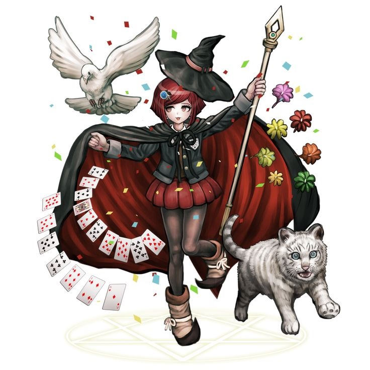
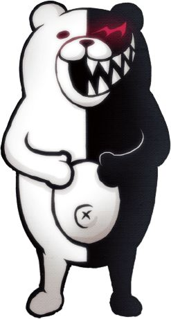
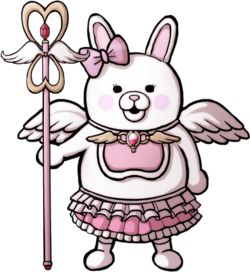

Welcome to the killing game...
Created by Tiago / Kreca • 2026
Bem-vindo à Hope's Peak Academy!

Ultimate Magician!
Nyeh... Magic is real!
Himiko acredita muito em sua magia e costuma dizer que está cansada!

Headmaster of Hope's Peak Academy!
Upupupu... It's punishment time!
Monokuma tem duas metades: uma branca e outra preta!

Ultimate Teacher!
Usami Power! Pink Magic!
Monomi também é conhecida como Usami!
Seis mistérios esperam por você...
Trials concluídos: 0 / 6